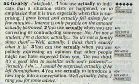

本棚から
留学に役立った本 COLLINS COBUILD LEARNER'S DICTIONARY
HarperCollins Publishers 刊
ISBN 0-00-375057-4 hardback,
0-00-375058-2 paperback
1996 出版
語学学校では、初級・中級のレベルからすでに英英辞書（English-English, Monolingual Dictionary を使って言葉の意味を調べ、その意味をクラスメートに英語で教える.......という訓練をします。
英英辞書は、慣れないうちは意味の解説する文中にもたくさん知らない単語が出てくるので、引けば引くほどわからなくなります。（笑） まるでお役所でいろいろな窓口をたらい回しにされて結局用が足せなかった日のようです。
しかし、がんばって使っていると、次第に英語らしい表現が身に付き、英語的なモノの考え方ができるようになります。
５月にオークランドに来てから、ずーっと英英辞書を探していたのですが、とうとう見つけたのがこの辞書です。その特徴と、どこが気に入ったかをまとめます。
The Bank of English：編纂資料
この辞書は、Corpus と呼ばれる、文学から人気小説、新聞、雑誌、ジャンクメールに至るまでの幅広い内容をカバーした文章（約２億５千万語）と、自然な会話から収録された豊富な言葉、用例（約２千万語）とを収録したコンピューターデータベースに基づいて、約60,000の見出し語が選択されています。それらのうち、およそ25%はアメリカ英語、5%あまりがオーストラリア、シンガポールで使われている英語から収録されています。
その成果として、自然な用例が豊富（約55,000例）に載っていますのでとても参考になります。
The entries：見出し語、解説文
この辞書では、単語の意味を典型的で頻出する文脈の中で説明し、併せて典型的な文法のパターンも解説しています。さらに、教室で先生が生徒に言葉の意味を教えるときのような、直接的で親しみやすい言い回しで書かれています。
例： run という単語の第21番目の意味は、次のように書かれています。
When you say that vehicles such as trains and buses run from one place to another, you mean they regulaly travel along that route.
また、発音記号、可算名詞・不可算名詞の区分もきっちり表現されています。
The Extra columnn：特別欄
この辞書の最も便利な特徴が、エキストラ・コラムです。見出し語と、その意味を説明しているメイン・コラムの欄外に、出現頻度、文法、品詞区分（a part of speech）、使用例、スタイル（イギリス英語・アメリカ英語の区分、古英語、formal・informal・rude の区分、ジャーナリズム・文芸・技術用語の区分、話し言葉と書き言葉の区別）が記述されていますので、探したい情報をすばやく見つけることができます。（下の写真参照）

Illustrations：イラスト
巻末には、必要にして十分なイラスト（人体・衣類・住宅・自動車と自転車・工具・調理器具・昆虫・動物・果物・野菜・楽器・模様・図形）が収められています。
Geographical Names
世界の中で、人口75万人以上の国について、
Country Adjective People Language Currency Capital
が一覧表で解説されています。 例えば、デンマークの場合には、
Denmark（国名）, Danish（形容詞）, Dane（デンマーク人）, Danish（言語）, Danish Krone（通貨）, Copenhagen（首都）
となります。
方位、数、日付、時刻、単位換算表
north-northeast（北北東）といった方角の表現、cardinal number（基数）と ordinal number（序数）のような数の表現、日付や時刻、季節の表現、ヤード・ポンドなどの単位換算表がわかりやすくまとめられています。
釣りの記事を読んでいると、12ポンドのブラウントラウトとか、人さらい岬から６マイル沖が良く釣れる......などの表現が多々ありますので重宝します。（笑）
単語リスト
約３千語の重要単語リストが巻末に整理されていますので、学習の進展度の確認、実力養成に役立ちます。
サイズ・重さ・価格
日本で輸入された英英辞書を買うのと比べれば、ニュージーランドで買う辞書は実にお買い得だと思います。この辞書は99年９月当時で約35ドル（1900円程度）で買いました。他の出版社の辞書よりも低めの価格設定がなされていたように思います。
また、毎日学校に持って行けるサイズと重さです。語学学校やオークランド大学の語学センターで、この辞書の上位版である COBUILD SERIES ENGLISH DICTIONARY が備えてあってとても気に入ったのですが、いささか大きすぎてとても持ち歩こうという気になれないのが難点でした。
なお、辞書を買う場合には、いつまでも永く使えるようにハードカバーを買うことをお勧めします。特に毎日持ち歩いているとすぐにヨレヨレになってしまうので、少々高くてもやはりハードカバーの方が丈夫です。
本当に英英辞書の偉大さと便利さを実感したのは、宿題で Collocation （連語：正しく結びついた語群、または意味上で一つの単位を成す語群) を考えるクロスワードパズルが出されたときです。
手持ちの英和辞書ソフトウェア（日本の出版社製）を使って個々の単語を調べていったのですが、英語の中での決まり文句と言えるコロケーションの事例があまりに少なく、いくら引いても答えが見つかりませんでした。ところが、英英辞書を使うと、例文の中にいくつも典型的な言い回しが収録されており、クロスワードがすらすらと解けたのです。
本棚から 目次へ
サイトマップ
ホームへ
お問い合わせ